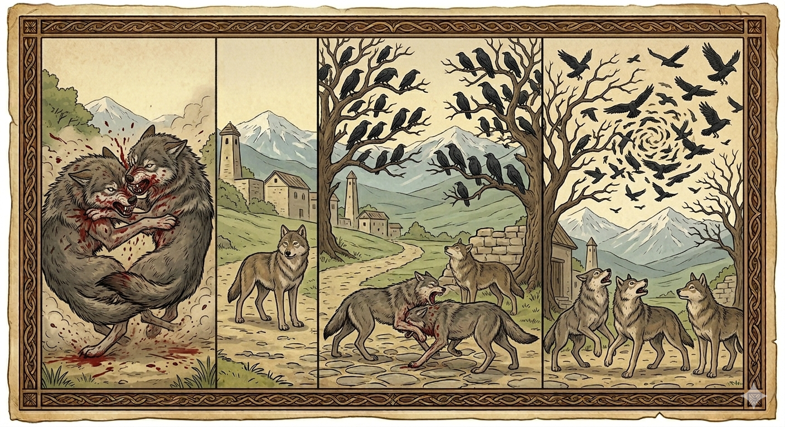

И.А. Дахкильгов. Хьехаме дувцарш - поучительные рассказы-притчи.
И.А. Дахкильгов. Хьехаме дувцарш - поучительные рассказы-притчи. Из ингушского фольклора.

Бертийи къайгаши
Ши бордз вӀашагӀа летай. Пархенце вӀаший цӀокаш йохаяьй, цӀийш Ӏоъахийтад. ХӀаьта а ца соцаш, геттар хьаьръяьнна йоаллаш хиннай. Шийга да-а йоагӀаш хинна кхыйола бордз тӀакхаьчай царна. Летача берзалошка а хьежа, тӀаккха дӀай-хьай хьежай. Латаш йоаллача шин берзага аьннад цо: - Шо шиъ вӀашагӀа латаш ма йий, хӀаьта гой шоана укх гонахьарча гаьнаш тӀа гулъенна ягӀа къайгаш. Шо вӀаший цӀий Ӏийда яларга хьеж шоана уж. Шоашка аьннар дика кхетадаьд латаш хиннача шин берзо. Кхы ца латаш сецай уж. Шоайчох хӀама ца хинна, дог даьттӀа къайгаш дӀаяхай.
РУССКИЙ
Волки и вороны
Из-за чего-то подрались два волка. Борьба была жестокой: по сторонам разлетались клочья, лилась кровь. На дерущихся наткнулся какой-то другой волк. Глянул он на них, потом посмотрел по сторонам и сказал: "Вы деретесь в кровь и не видите, что вокруг на деревьях сидит стая ворон, которая ждет не дождется, пока вы оба околеете". Волки прекратили свару. Они поняли смысл сказанных им слов. Видя, что их надежды не оправдались, огорченные вороны разлетелись.
ENGLISH
Wolves and Crows
For some reason, two wolves got into a fight. It was a brutal struggle: shreds of fur flew in all directions and blood flowed. Another wolf happened upon the fighting pair. He glanced at them, then looked around and said: "You're fighting to the death and can't see that there's a flock of crows perched in the trees all around you, who can't wait for you both to die." The wolves stopped fighting. They understood the meaning of the words spoken to them. Seeing that their hopes had been dashed, the disheartened crows flew away.
НОХЧИЙН
ПОГОВОРКИ
Бера дег чу десса хӀама чӀоагӀа латт. - Детское сердце запоминает навечно. Визача хьаьший бӀарг наӀаргахьа берз. - Насытившийся гость на дверь поглядывает. ГӀажах Ӏаха енна боабашк яь чу яхай. - Попыталась утка гоготать по-гусиному, да в котел угодила. Дикача (везача) новкъоста водар хилча, хьона во хилар да из. - Горе и беда твоего лучшего друга - твои горе и беда. "ЦӀагӀаравар лалва са, со харца луй!" - яьхад воча сесаго. - "Пусть мой домашний (муж) умрет, если я лгу!" - говорила плохая жена (лгунья). Ӏаса Ӏаттах дакх, саг лаьттах вакх. - Телок кормится выменем, человек кормится землею. Къахьа дале а, бакъдар тол. - Пусть и горькая, но правда все же лучше. Саго даь дика, саго даь во мичча хана цунга юхакхоач. - Добро ли, зло ли сделал человек - приходит день, когда ему за них воздается. ХьагӀах лораденна дог цхьалха хиннад, йоахарех лорабенна мотт цӀена хиннаб. - Чисто сердце, убереженное от черной зависти, как чист и язык, убереженный от сплетен. Хьал долчо аьннар эттад, къечо аьннар эттадац. - Сказанное богачом принимается на веру, сказанное бедняком в расчет не берут.